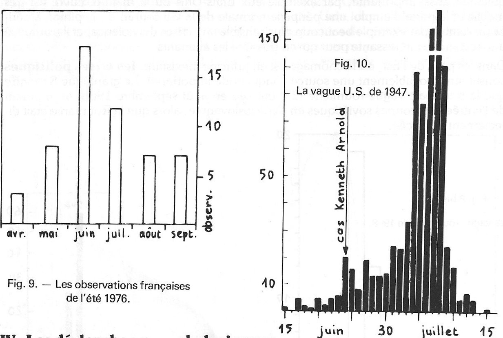

Celui-ci semble par contre avoir été totalement négligé. Il serait intéressant d'essayer de mettre en évidence une
corrélation entre les vagues d'ovnis et les périodes d'angoisse de la population.
La détermination d'un critère d'inquiétude objectif d'une population est délicate. Comme en toute science humaine,
nous ne pourrons effectuer qu'une approche plus ou moins parfaite de la réalité. Il ne faut pas s'attendre à trouver
un critère miracle qui s'appliquerait à tous les pays et toutes les époques. Les différences ethnologiques
importantes à travers le monde nous obligeront à passer par une étude psychosociologique de la population et de
l'époque considérée. Une première approche intéressante est celle des causes du suicide, situation extrême, mais
révélatrice.
Deux écoles sont en présence dans l'étude du suicide ; la doctrine pathologique défendue par Esquirol P. MORON (1975). Le suicide. PUF. qui arguait de la fréquence de la réaction suicidaire dans
l'étude de la pathologie mentale alors naissante, et la doctrine sociologique défendue par Durkheim E. DURKHEIM (1897). Le suicide. Alcan. qui tend à prendre le pas sur la précédente. Durkheim
avait basé son interprétation sur une étude statistique, le suicide représentant un phénomène constant que ne
peuvent expliquer les actes individuels, mais qui résulte bien plutôt d'un conditionnement d'ensemble, influence
familiale, sociale, religieuse, etc.
Pour Halbwachs M. HALBWACHS (1934). Les causes du suicide. Alcan. , c'est le vide
social créé autour de l'individu qui cause seul le suicide. Chaque société possédérait des "courants collectifs
suicidogènes" qui agissent de façons différentes :
par désintégration sociale, excès d'individualisation : suicide égoïï
par surintégration sociale, insuffisance d'individualisation : suicide altruiste des sociétés primitives ;
par dislocation anarchique du groupe social : suicide au cours des crises économiques, politiques, ou
insuffisance de cohésion sociale ;
par excès de réglementation sociale : suicide fataliste, dont l'intérêt ne serait plus qu'historique : cas des
esclaves par exemple.
Les événements politiques, sociaux et économiques possèdent un rôle important et complexe. Statistiquement les
révolutions ne modifient guère le taux de suicides, peut-être parce qu'elles ne touchent qu'une minorité; de la
population. Les guerres, contrairement à ce qu'on pourrait penser, déterminent un fléchissement notable des suicides
tant chez les vainqueurs, que les vaincus, ou les pays neutres ; il est probable que dans ces périodes, la cohésion
sociale se renforce dans un but commun. Les crises économiques augmentent la fréquence du suicide.
Les mass média jouent un grand rôle parmi tous les facteurs socio-culturels ; amplifiés par eux, les éléments de
désocialisation, crises, événements sociaux, problèmes professionnels, religieux, engendrant frustration, angoisse,
et manque de communication.
Parmi les différentes "fonctions" du suicide, la plus importante est la fonction d'appel mise en évidence par
Stengel E. STENGEL, & E.C. COOK: Attempted suicide , Chapman et Hall, 1958. qui
en fait le caractère le plus important du suicide. L'observation montre qu'en effet, un grand nombre de tentatives
apparaissent comme un appel à d'autres êtres humains, comme une sorte de sonnette d'alarme, le sujet réclamant un
secours parce qu'il se sent incapable de faire face seul à sa situation. Cette notion d'appel relie directement le
suicide à la notion de sollicitation consciente ou inconsciente du phénomène ovni par le témoin. Il peut être
intéressant de souligner que 50 % des suicides ont lieu entre
Une relation entre suicide et apparitions avait fort bien été mise en évidence au début du siècle. Flournoy
rapporte le cas de Benvenuto Cellini, qui cruellement emprisonné par le pape, avait résolu de se suicider. Ne
disposant pas d'un couteau pour se tuer, il disposa une grosse pièce de bois en trébuchet de manière à ce qu'elle
l'assommât lorsqu'il la ferait basculer. Mais quand tout fut prêt et qu'il voulut porter la main, il fut saisi par
une force invisible qui le projeta à 2 m de là, puis il eut l'apparition d'un merveilleux jeune homme dont les
exhortations réveillèrent son courage et lui firent abandonner ses funestes projets. Il eut encore dans sa prison
des apparitions de cet ange ainsi que du Christ et de la Vierge Flournoy, Th.: "Automatisme téléologique anti-suicide", Esprits
et médiums, Fishbacher, 1911. .
Le cas de la Baronne d'A., quoique différent par les circonstances, répond au même processus. La baronne d'A. se
crut atteinte d'une affreuse et incurable maladie qu'elle craignit de transmettre à ses enfants. Elle tomba dans un
profond désespoir et résolut de se suicider. Un soir de clair de lune, elle se rendit sur un débarcadère voisin avec
l'intention de se noyer. Mais tandis qu'elle regardait l'eau au-dessous d'elle, elle vit émerger de la nappe liquide
son ami, le Docteur T., la tête renversée en arrière, la regardant bien en face. Elle vit ses yeux étincelants
tandis qu'il s'élevait hors de l'eau ; lorsque le "Docteur" fut entièrement émergé, il la saisit fortement par la
taille, l'entraîna violemment loin du bord et la ramena à sa demeure où il la tança d'importance, lui reprochant son
suicide dans une sévère algarade. Après quoi, le "Docteur" partit et la baronne d'A. s'endormit sur une chaise
grelottant de peur et d'horreur. Elle se réveilla le lendemain dans cette position n'ayant plus l'intention du
suicide, avec une marque bleue à la taille là où le "Docteur" l'avait saisie et qui lui fit mal plusieurs jours. Il
est intéressant de préciser que le Docteur T. était pour la Baronne d'A. une sorte de directeur de conscience. Il
lui apparut dans le costume gris d'alpiniste qu'il portait lors de leur première rencontre.
Flournoy cite un cas rapporté par Jung , peut-être plus proche
par l'aspect du phénomène qui nous occupe ; c'est celui d'un paralytique, qui voulant se tuer en se précipitant par
la fenêtre se trouva rejeté dans la chambre par l'apparition d'une lueur éclatante devant la fenêtre.
Un cas de ce genre aurait eu lieu dans ma famille au début du siècle. la personne, alors jeune fille, avait résolu
de se suicider ; alors qu'elle se préparait à se pendre, elle vit apparaître une "grosse lune" brillante qu'elle
interpréta comme un signe du ciel, et abandonn a son projet.
On pourrait rapprocher ce cas de celui de l'apparition en 1271 , au Japon, d'un objet semblable à la
pleine lune au
moment où le grand prêtre Nichiren devait être décapité, semant la panique parmi les officiels et empêchant
l'exécution
Cependant, souligne Flournoy, l'automatisme téléologique ne se limite pas à ces cas extrêmes et peut se manifester
pour protéger ou diriger l'individu.
Si cette approche des causes et mécanismes du suicide nous apporte des éléments importants, celui-ci reste une
situation extrême en voie de disparition Moron, P.: Le suicide , PUF, 1975 . De
plus les statistiques sur le suicide sont fragmentaires en raison des difficultés de recensement. Nombre de suicides
sont camouflés par les familles pour des raisons morales ou sociales compréhensibles.
Nous avons vu que les crises économiques sont une cause importante des suicides ; elles entraînent une
augmentation du chômage, des expulsions de locataires, etc., qui isolent l'intéressé en lui faisant apparaître son
inutilité. Cet état est particulièrement sensible pour les femmes dont l'absence d'emploi professionnel représente
la moitié des cas de suicide Moron, P.: Le
suicide , PUF, 1975 . Les difficultés matérielles se traduisant par un isolement de plus en plus grand
soit une des principales causes au suicide des vieillards. Des recherches entreprises en Autriche, en Suisse et en
Angleterre notamment montrent la même aggravation du suicide en période de crise économique.
France : corrélation chômage - observations (1945-1974)
Dans les sociétés industrialisées immobilistes d'Europe occidentale, il est certain que le chômage est générateur
d'angoisse et d'incertitude. Chacun est concerné par le chômage et la crainte de perdre son emploi est source
d'inquiétude. Le nombre de demandeurs d'emploi est parfaitement connu depuis 1945. De plus tous les demandeurs
d'emploi ne sont pas des chômeurs ; une partie d'entre eux se sentent inquiets ou mal dans leur peau, en rendent
responsables leur emploi et "cherchent autre chose". Un bon indice d'inquiétude de la population pour les sociétés
d'Europe occidentale peut nous être donné par les variations du nombre de demandeurs d'emploi.
Le graphique de la figure 3 représente les variations du nombre annuel d'observations ovni français de 1945 à 1974
connu à LDLN Communication personnelle de Mme Ch. GUEUDELOT.
et les nombres annuels de demandeurs d'emploi pour la même période Monthly Bulletin of Statistics. United Nations, Genève. .
On peut constater qu'il existe une similitude frappante entre les 2 courbes. Les vagues de 1954 et 1974 correspondent aux maximas du nombre des demandeurs d'emploi en
France depuis 1945. Le minimum de 1963 correspond également au minimum du nombre des demandeurs d'emploi. Pour
essayer d'être le plus exact possible, il importe de vérifier mathématiquement ces résultats à l'aide des
coefficients de corrélation.
Le coefficient de corrélation r est une mesure de la liaison qui existe entre des variables couplées (ici nombres
d'observations ovni et nombres de demandeurs d'emploi), et s'il dépasse un certain seuil, il permet éventuellement
d'affirmer que cette liaison est statistiquement significative.
J'ai calculé le coefficient de corrélation pour les 30 couples de données correspondant aux années 1945 à 1974, et
ai obtenu r = 0,663, ce qui pour n = 30 représente une liaison hautement significative ; la probabilité associée est
inférieure à 1 pour 10 000.
Tab.4. - France : nombre d'observations et de demandeurs d'emploi.
Années
Observations ovni
Demandeurs d'emploi en milliers
1945
6
73,1
1946
2
52,5
1947
5
47,1
1948
9
77,8
1949
1
131,1
1950
23
152,9
1951
11
120,1
1952
176
131,8
1953
42
180,0
1954 901
183,3
1955
34
160,0
1956
25
112,3
1957
30
80,7
1958
18
93,1
1959
12
139,7
1960
18
131,1
1961
17
112,0
1962
17
100,8
1963
13
96,8
1964
21
97,1
1965
60
141,3
1966
52
147,1
1967
156
196,1
1968
174
253,8
1969
172
223,0
1970
141
262,1
1971
171
338,2
1972
199
383,5
1973
312
393,9
1974
1028
497,8
Il est intéressant de vérifier ce résultat pour d'autres pays où le chômage est un stimulus émotionnel important.
Malheureusement, les statistiques ovni sont en possession de quelques chercheurs américains, et il est très
difficile de se les procurer. Malgré mes efforts, il ne m'a pas été possible de les obtenir.
ation chômage - observations (1945-1970)
Cependant, il existe des statistiques sur les atterrissages espagnols de 1945 à 1970 Ballester-Olmos, V. &&lée, J.: 1971 décembre). Etude de cent atterrissages ibériques. LDLN n°115.
et j'ai pu me procurer en Espagne le nombre total d'observations pour la même période Communication personnelle de Miguel GUASP. .
Mathématiquement, le tableau 6 nous donne les observations totales un coefficient de corrélation = 0,51 et pour les
atterrissages = 0,628. Ces résultats, quoique un peu inférieurs aux chiffres français, représentent eux aussi une
liaison très significative = les probabilités associées sont respectivement de 1 pour 100 et 1 pour 1000.
Il est regrettable que je n'aie pas pu me procurer d'échantillonnage pour un plus grand nombre de pays.
Si les statistiques sur les nombres d'observations ovni sont assez suivies depuis 1945, il existe aussi quelques
recueils d'observations anciennes. Ceux-ci mettent en évidence un certain nombre de vagues mondiales depuis la fin
du 19ème siècle . Il n'existe pas de statistique précise sur le chômage
pour cette période, mais on peut cependant cerner de manière précise les variations de l'activité économique causes
du chômage.
Tab.6. - Espagne : nombres d'observations et de demandeurs d'emploi.
Années
Observations ovni
Atterris. ovni
Demandeurs d'emploi en milliers
1945
2
-
148
1946
6
-
178
1947
2
-
139
1948
3
-
117
1949
0
-
160
1950
87
3
166
1951
7
0
144
1952
25
1
106
1953
11
2
122
1954 44
6
107
1955
19
2
112
1956
27
0
106
1957
37
1
91
1958
21
2
81
1959
25
1
80
1960
13
1
114
1961
9
1
125
1962
6
0
98
1963
12
1
100
1964
12
1
130
1965
87
1
147
1966
35
3
123
1967
88
7
146
1968
375
40
182
1969
224
21
159
1970
135
4
146
On pourrait penser pour cela aux variations de la production industrielle, mais elles sont noyées dans la rapide
expansion de la productivité. Les indices de prix, qui baissent en période de récession, ne sont pas plus
satisfaisants car ils sont noyés dans l'inflation grandissante du 20ème siècle .
Les difficultés économiques en période de récession rendent les affaires difficiles et font chuter les bénéfices. Si
la valeur des actions peut être soumise à la spéculation, seule une profonde altération de la vie économique peut
varier leur rendement : les variations de ce rendement peuvent constituer un "indice d'inquiétude" utilisable. De
plus, celui-ci est parfaitement connu depuis plusieurs siècles pour la plupart des pays industrialisés S. HOMER (1963). History of interest rates. Rutgers University Press. . Pour le 19ᵉ siècle , encore très rural, le mouvement des récoltes de céréales pourrait
constituer aussi un indice d'inquiétude valable J. BOUVIER (1972). Initiation aux mécanismes économiques contemporains. Sèdes. .
Des statistiques du nombre d'observations de 1800 à 1900 ont été établies par la SOBEPS Inforespace n°4, 1972. Chronique des apparitions OVNI au XIXe siècle. ;
j'y emprunterai la période 1880 à 1900, la plus précise. Pour la période 1900 à 1945, il ne semble pas avoir été
publié de statistiques complètes. Les éléments les plus intéressants sont fournis par la FSR "UFOS in Wales in 1905", FSR, vol. 17, n°4, 1971. , centrée sur le pays de
Galles, comporte "plusieurs douzaines" d'observations dont 5 ou 6 datées avec précision ; je retiendrai sous toute
réserve 20 observations pour cette année. Une 2ᵉ vague, semble-t-il mondiale, eut lieu de "The airships wave of 1909", FSR , vol. 16, n°6 et 7,
1970. avec un maximum sur l'Angleterre et la Scandinavie ; Carl Grove retient quarante-trois rapports
pour cette année, pour la plupart des "bateaux
aériens " style 1897. Enfin, une 3ème vague centrée sur la Scandinavie eut lieu en 1933-1934 Mystery airplanes in 1930. FSR vol. 17, n°2, 3, 4, 5, 1971. . John A. Keel retient 20 rapports en 1933, 55 rapports en 1934 et quelques
autres en 1936-1937-1938. Ces rapports concernant presque tous des "aéroplanes fantômes" qui firent couler beaucoup
d'encre à l'époque. Je complèterai cette période 1885-1945 avec les observations françaises connues à LDLN
Il n'existe pas à ma connaissance d'indice économique pour l'ensemble du monde ; les indices qui reflètent le
mieux la marche de l'économie mondiale sont ceux de l'Angleterre, pays le plus ouvert au commerce international en
cette première moitié du XXe siècle.
Fig. 7 - Corrélation activité économique - observations mondiales (1885-1945)
Malgré ces approximations, on constate sur le graphique 7 que toutes les vagues de cette période 1885, 1896-1897,
1905, 1909, 1922, 1933-1934, 1946, correspondent à des dépressions économiques. La grande vague de 1897 correspond à
l'activité la plus basse de tout le 19ème siècle J. BOUVIER (1972). Initiation aux mécanismes économiques contemporains. Sèdes. .
On peut se demander pourquoi la vague de 1897 a eu son maximum aux États-Unis, dans le Middle West plus précisément
; or, cette région est la plus grande productrice de céréales du monde et la récolte 1897 s'annonçait très mauvaise
(21). On peut noter au passage que ces constations n'infirment en rien les corrélations avec les oppositions de la
planète Mars avancées par Vallée et Guasp M. GUASP (1973). Theoria de procesos de los OVNIs. Publication de l'auteur. Valencia. .
Il ne faut se leurrer, et bien considérer que si le nombre de demandeurs d'emploi constitue un bon critère
d'inquiétude pour la France et l'Espagne entre 1945 et 1974, cela ne veut pas dire qu'il le soit pour tous les pays
et toutes les époques. Les causes d'Inquiétude sont très fluctuantes. En sciences humaines, rien n'est plus vrai que
le vieil adage l'habitude est une 2nde nature e disait-on pas officiellement en France en 1973 lq>il de
400000 chômeurs est intolérable alors qu'en 1976 avec un million de chômeurs la situation de l'emploi
n'est plus notre principale préoccupation . Il est probable que pour d'autres pays, le chômage ne soit pas une
source d'inquiétude aussi importante, par exemple aux États-Unis où la main-d'œuvre est très mobile et la perte
d'emploi une péripétie normale de la vie courante ; l'opinion américaine semble par exemple beaucoup plus sensible
aux crises de violence, et il y aurait là une recherche intéressante pour qui en possède les éléments.
"> Fig. 8 - Les observations roumaines
Dans les pays de l'Est, où le chômage est en principe inexistant, les crises politiques constituent probablement
une source d'inquiétude importante. Le graphique 8 montre que la principale vague roumaine I. HOBANA & J.&RBERGH (1973). Les OVNI en U.R.S.S. et dans les pays de l'Est. Lafond.
eut lieu en
Autre exemple : nul ne niera l'inquiétude provoquée par la sécheresse de l'été 1976, en France, essentiellement en
juin, où l'ampleur du désastre est apparue. Le graphique 9, qui montre le nombre d'observations rapportées par la
chronique "nouvelles récentes" de LDLN

Fig. 9 et 10
La principale difficulté reste la détermination d'un critère d'inquiétude mathématiquement exploitable comme l'est
le chômage. Une crise politique ou un été de sécheresse sont des événements difficilement chiffrables. Le chercheur
doit faire preuve d'une grande ingéniosité pour traduire l'inquiétude d'une population en chiffres exploitables.